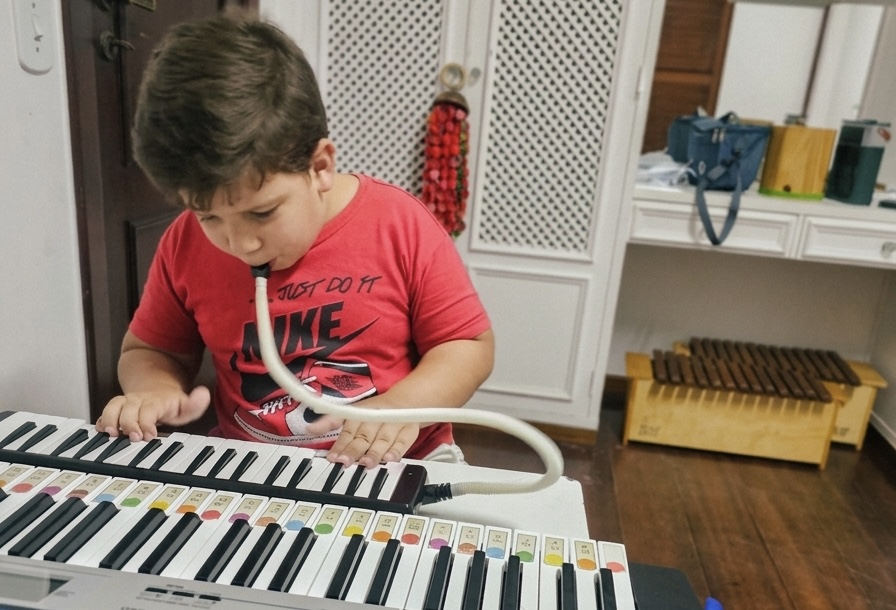

Atendimento acolhedor e humanizado
Cuidar, desenvolver e fortalecer cada criança e sua família.
Uma jornada completa com especialistas para promover autonomia, aprendizagem e bem-estar no dia a dia.
Quem somos
Compromisso com o desenvolvimento humano integral
O IAD é uma instituição dedicada à educação e à assistência social, nascida do compromisso genuíno com o desenvolvimento humano. Acreditamos que cada pessoa, especialmente cada criança, carrega um potencial único que merece ser visto, incentivado e celebrado.
Atuamos com foco no atendimento a pessoas com TEA (Transtorno do Espectro Autista), promovendo um espaço onde ciência, tecnologia e afeto caminham juntos. Por meio de projetos, pesquisas e práticas inovadoras, trabalhamos nas áreas educacional, cultural, ambiental e de saúde, sempre com um objetivo central: contribuir para a formação integral e para a qualidade de vida de crianças, jovens e adultos.
Somos uma ponte entre instituições de ensino, empresas e comunidades, porque transformar vidas é um trabalho coletivo.
Nossa missão
Desenvolver ações que melhorem a qualidade de vida das pessoas, reconhecendo cada ser humano como o maior patrimônio da sociedade.
Nossos objetivos
No IAD, acreditamos que saúde, educação e cuidado andam de mãos dadas. Por isso, estimulamos, apoiamos e incentivamos iniciativas de aprimoramento educacional, cultural, assistencial e tecnológico.
Através de programas, projetos e ações concretas nas áreas ambiental, social, de saúde e de inclusão digital, buscamos criar novas possibilidades para quem mais precisa, atuando tanto em parcerias públicas quanto privadas.
Nosso compromisso é simples: abrir caminhos onde antes havia barreiras.
IAD - Transformando pela renovação do entendimento.
Histórias reais de famílias que acompanham o desenvolvimento dos seus filhos com o Instituto Atitude.
Cada depoimento representa uma jornada de cuidado, evolução e confiança construída em parceria com nossa equipe multiprofissional.
Especialidades
Cuidado multiprofissional integrado em todas as etapas do desenvolvimento
Psicologia Infantil
Desenvolvimento socioemocional, regulação comportamental e apoio familiar.
Fonoaudiologia
Estimulação da comunicação, linguagem e habilidades de interação.
Terapia Ocupacional
Fortalecimento da autonomia em atividades do dia a dia e integração sensorial.
Fisioterapia
Reabilitação funcional, fortalecimento motor e prevenção de limitações no desenvolvimento.
Psicomotricidade
Estímulo da coordenação, percepção corporal e integração entre movimento, emoção e aprendizagem.
Musicoterapia
Intervenções com música para favorecer comunicação, expressão emocional e interação social.
Equoterapia
Terapia assistida por cavalos para promover equilíbrio, postura, autonomia e desenvolvimento global.
Psicopedagogia
Apoio às dificuldades de aprendizagem com estratégias personalizadas para cada criança.
Neuropsicopedagogia
Avaliação e intervenção focadas nas funções cognitivas e no processo de aprendizagem.
Nutrição
Orientação alimentar para saúde integral, seletividade e suporte ao desenvolvimento infantil.
Profissionais


Equipe especializada e acolhedora
Contamos com uma equipe multiprofissional formada por especialistas em desenvolvimento infantil, aprendizagem, reabilitação e cuidado integral, com atuação acolhedora e personalizada para cada família.
Gabriela Brandão
Psicóloga
Agnes Guedes
Fonoaudióloga
Ana Carolina Ligneul
Psicóloga
Ana Lydia Servais
Nutricionista
Alex Reinaldo Alves
Fisioterapeuta
Tatiana Jerman
Psicóloga
Mariana Reis
Neuropsicopedagoga
Vitória Souza
Nutricionista
Carolina Bhering
Fonoaudióloga
Juan Pedro de Oliveira
Fisioterapeuta
Grazielle Espíndola
Psicóloga
Leticia Coutinho
Psicóloga
Rosangela da Silva Ferreira
Terapeuta Ocupacional
Stephany Knupp
Psicóloga
Daniele Clemente
Psicóloga
Juliana Alexandre
Psicóloga
Daysi Mouta
Musicoterapeuta
Fabiana de Araújo
Psicopedagoga
Rute Mendonça
Fisioterapeuta
Camila Barroso
Psicopedagoga
Illa Railla de Sousa Ferreira
Fonoaudióloga
Maryellen Pelegrini Mello
Psicopedagoga
Eventos
Seminário Atitude em Ação
Encontro sobre inovação em projetos educacionais e sociais com especialistas convidados.
Oficina de Planejamento Estratégico
Formação prática para equipes que desejam estruturar metas, ações e indicadores de impacto.
Contato
E-mail: institutoatitudedsn@gmail.com
WhatsApp: (021) 99529-5995
Atendimento: Segunda a sexta, 08h às 18h
Localização
Travessa Alexandre Fleming, 100 - Teresópolis, Rio de Janeiro, Brasil